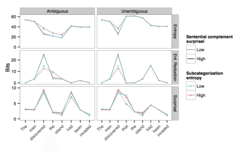
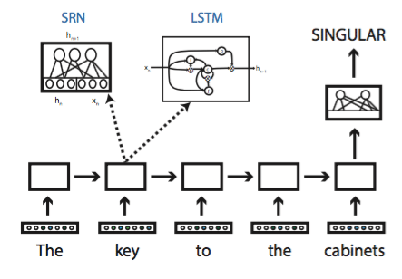
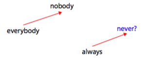
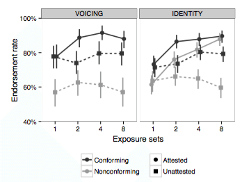

What are the mental representations that constitute our knowledge of language? How do we use them to understand and produce language? In the Computation and Psycholinguistics Lab, we address these questions and others through the use of computational models and human experiments. Our multi-department lab is affiliated with the Linguistics Department and Center for Data Science at New York University, as well as the Department of Cognitive Science at Johns Hopkins University.
Tal is an Assistant Professor in the Department of Linguistics and Center for Data Science at New York University, where he directs the Computation and Psycholinguistics Lab.
What are the mental representations that constitute our knowledge of language? How do we use them to understand and produce language?
We address these questions using computational models and human experiments. The goal of our models is to mimic the processes that humans engage in when learning and processing language; these models often combine techniques from machine learning with representations from theoretical linguistics.
We then compare the predictions of these models to human language comprehension. In a typical experiment in our lab, we invite participants to read a range of sentences, and record how long they take to read each word, measured based on key presses or eye movements. Other techniques include artificial language learning experiments and neural measurements.
Finally, we use linguistics and psycholinguistics to understand and improve artificial intelligence systems, in particular “deep learning” models that are otherwise difficult to analyze.
The probability of a word or a syntactic structure is a major predictor of how difficult they are to read. What are the syntactic representations over which those probability distributions are maintained? How is processing difficulty affected by the probability distribution we maintain over the representations we predict, and in particular, our uncertainty about the structure and meaning of the sentence?
We can study these questions by implementing computational models that which incorporate different representational assumptions, and deriving quantitative predictions from those models:
We can then measure to what extent these predictions match up with human sentence comprehension processes, as measured by reading times (eyetracking, self-paced reading) or neural measurements such as MEG.
Expectations are sometimes malleable and context-specific. If the person we’re talking to is unusually fond of a particular syntactic construction, say passive verbs, we might learn to expect them to use this construction more often than other people. In ongoing research, we’re investigating the extent to which our expectations for specific syntactic representations can vary from context to context.
Artificial neural networks are a powerful statistical learning technique that underpins some of the best-performing artificial intelligence software we have. Many of the neural networks that have been successful in practical applications do not have any explicit linguistic representations (e.g., syntax trees or logical forms). Is the performance of neural networks really as impressive when evaluated using rigorous linguistic and psycholinguistic tests? If so, how do these networks represent or approximate the structures that are normally seen as the building blocks of language?
A related topic of research is lexical representations in neural networks. Neural networks are typically allowed to evolve their own lexical representations, which are normally nothing but unstructured lists of numbers. We have explored to what extent such lexical representations implicitly capture the linguistic distinctions that are assumed in linguistics (in particular, formal semantics).
We regularly generalize our knowledge of language to words and sentences we have never heard before. When is our linguistic knowledge limited to a specific item, and when do we apply it to novel items? What representations do we use to generalize beyond the specific items that we have encountered?
We can often study these questions using artificial language learning experiments. In one experiment, for example, we taught participants an artificial language with a simple phonological regularity, and tested how they generalized this regularity to new sounds:
